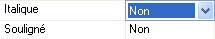

Le mode de saisie des propriétés peut être différent d’une ligne à l’autre. Les modes possibles sont :
Saisie "normale" (frappe de caractères).
Saisie d’un multi-choix.
Saisie normale avec possibilité d’appeler une boîte de dialogue (zoom par exemple).
Saisie d’un texte multi-lignes.
Saisie d'un nom de traitement (avec possibilité d'éditer et de générer un squelette du code source de ce traitement).
S'ajoute à cela, dans certains cas, l'accès à un menu contextuel permettant de modifier une propriété par une commande.
Saisie normale
Saisissez la valeur du paramètre et validez par Tab ou Entrée.
Saisie d’un multi-choix
Lorsque vous cliquez sur le paramètre, la colonne de droite se transforme en multi-choix.
Exemple

Sélectionnez un choix à la manière habituelle.
Saisie normale avec boîte de dialogue
Lorsque vous cliquez sur le paramètre, vous passez en mode saisie normale et un bouton  apparaît, indiquant que vous pouvez aussi appeler une boîte de dialogue pour effectuer la saisie.
apparaît, indiquant que vous pouvez aussi appeler une boîte de dialogue pour effectuer la saisie.
Exemple
Lors de la saisie du style, vous pouvez soit taper le nom du style "à la main", soit appeler la boîte de sélection des styles.
Les lignes de propriété affichant un élément de la feuille de styles ou un des ses paramètre disposent de plus d'un menu contextuel (voir la rubrique Menus contextuels de la fenêtre Propriétés).
Saisie d’un texte multi-lignes
Par exemple, la saisie des commentaires utilise un éditeur de texte simplifié. Dès que vous entrez en modification sur ces paramètres, l’éditeur s’ouvre.
Remarque : les fonctionnalités avancées d’édition (police, cadrage, etc.) ne sont pas disponibles.
Saisie d’un nom de traitement
Voir la rubrique Saisie d'un nom de traitement.
Les lignes de propriété affichant un nom de traitement disposent de plus d'un menu contextuel (voir la rubrique Menus contextuels de la fenêtre Propriétés).